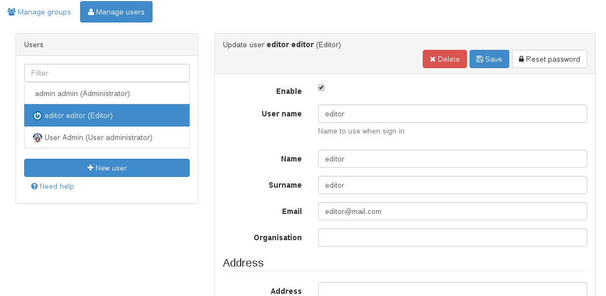

Настраивать¶
Изменить пароль администратора¶
Первый шаг, который вы должны сделать после развертывания GeoNetwork, — это войти в систему с правами администратора и изменить пароль администратора. Пользователь-администратор по умолчанию называется admin, а пароль — admin. После того, как вы вошли в систему, вам нужно войти в консоль администрирования, чтобы настроить основные параметры.
Измените пароль администратора здесь:
http://localhost:8080/geonetwork/srv/eng/admin.console#/organization/users?userOrGroup=admin

Базовые настройки¶
Затем перейдите на страницу настроек:
http://localhost:8080/geonetwork/srv/eng/admin.console#/settings
Здесь есть несколько значений конфигурации, которые следует изменить, например, домен URL-адреса для вашего каталога, если он будет использовать https или заголовок для вашего каталога.

Убедитесь, что вы используете имя хоста, порт и протокол, которые ваши пользователи будут использовать для доступа к геопорталу, поскольку эти настройки будут использоваться для создания URL-адресов по умолчанию, таких как те, которые показаны на карте сайта.
Предпочтительным протоколом должен быть https, так как это будет означать безопасную навигацию для ваших пользователей, но http является протоколом по умолчанию для простоты развертывания и разработки. Не следует входить в систему вне протокола https из соображений безопасности. Использование протокола https в строгой политике браузера, например, в Firefox, может означать, что некоторые картографические сервисы http будут заблокированы и отображать ошибку при попытке загрузки на карту. Это можно решить, используя только картографические сервисы https. Поскольку http является устаревшим протоколом, со временем эта проблема будет решена. Обратитесь к поставщику картографических услуг, чтобы использовать https с действительным сертификатом для картографических услуг.

Идентификатор каталога должен быть уникальным именем во всем Интернете. Идентификатор по умолчанию генерируется GeoNetwork автоматически, и его использование должно быть безопасным. Если у вас нет лучшего идентификатора, вы можете оставить созданный по умолчанию.
Загрузка схем¶
Последнее, что нужно настроить, это какие схемы мы собираемся использовать в нашем каталоге. По умолчанию в GeoNetwork уже установлены некоторые из наиболее часто используемых схем. Эти схемы обычно имеют образцы и шаблоны, которые вы можете легко добавить в свой каталог на консоли администратора:
http://localhost:8080/geonetwork/srv/eng/admin.console#/metadata

Демонстрационные данные не используются в реальных каталогах, они просто используются, чтобы показать, как следует заполнять метаданные и как они будут выглядеть после того, как данные будут вставлены в каталог.
С другой стороны, шаблоны необходимы, если вы хотите редактировать метаданные. Вместо использования пустых XML-файлов для создания метаданных при создании новой записи используется шаблон. Вы всегда можете импортировать или собирать уже созданные метаданные вместо того, чтобы использовать редактор для создания записей вручную, если это соответствует вашему варианту использования.
После того, как вы добавите несколько шаблонов, ваш каталог будет готов к использованию.
Создание пользователей¶
Хотя вы можете включить самостоятельную регистрацию пользователей, обычно пользователей создают вручную, поэтому вы точно контролируете, кто и к чему имеет доступ. В каталоге используется концепция пользователей, групп и профилей пользователей.
Пользователь может быть частью одной или нескольких групп.
У пользователя есть роль в группе.
Роль администратора относится не к группе, а ко всей платформе.
Пользователи могут иметь разные роли в разных группах. Роль определяет, какие задачи может выполнять пользователь:
Гость — это пользователь, который может видеть записи в группе, но не может их изменять.
Редактор — это пользователь, который может создавать или редактировать записи в группе.
Рецензент — это пользователь, который может редактировать и публиковать записи в группе.
UserAdmin — это пользователь с правами администратора над записями и пользователями в группе.
Чтобы добавить нового пользователя в систему GeoNetwork, выполните следующие действия:

Выберите в меню кнопку Администрирование
На странице Администрирование выберите Управление пользователями.
Нажмите кнопку Добавить нового пользователя
Предоставьте информацию, необходимую для нового пользователя
Назначьте правильный профиль
Назначить пользователя в группу
Нажмите Сохранить
Для каждой возможной роли есть список групп. Таким образом, у пользователя могут быть разные роли для разных групп, что позволяет пользователю быть гостем только для чтения в одной группе, но при этом иметь возможность редактировать и просматривать записи в другой группе.

Создание групп¶
Для создания новых групп вы должны войти в систему с учетной записью с правами администратора.
Выберите в меню кнопку Администрирование. На странице Администрирование выберите Управление группами.
Выберите Добавить новую группу. Вы можете удалить группу Sample;
Заполните детали. Адрес электронной почты будет использоваться для отправки отзывов о загрузках данных, когда они происходят для ресурсов, входящих в состав Группы.
Нажмите Сохранить
Права доступа могут быть установлены для каждой записи метаданных. Вы можете определить привилегии для каждой группы.
Подробнее см. настройка-каталога.